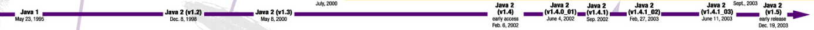

Funktionales Programmieren
mit Beispielen in Haskell und Java,
License: CC-BY-SA-4.0
Martin Heuschober
2017-06-28

|
|
|
|
|
|
Eine Programmiersprache darf sich (meiner Meinung nach) funktional nennen wenn:
jede Funktion einen Rückgabewert hat.
Bonuspunkte gibt es für partielle Funktionsaufrufe, i.e. wenn eine Funktion mit mehreren Parametern mit nur einem Parameter aufrufbar ist, und eine Funktion mit um einen Parameter weniger zurückgibt.
|
Java8 |
|
|
Aufgabe: (Stackoverflow) Mache aus einer Liste: [5,4,2] => "+-----+----+--+"
|
|
Mache aus einer Liste: [5,4,2] => "| + + |"
|
|
|
|
|
|
mapfor-loop† |
|
|
†: Ich glaube aber fast das gleiche wie eine foreach-loop
fold/reduce |
|
filter |
|
|
all/any |
|
|
|
|
|
|
Aus der Dokumentation von node.js (fast wortgetreu) fs.openSync(path, flags[, mode])
path <string> | <Buffer> | <URL>flags <string> | <number>mode <integer>// get the file descriptor of the file to be truncated
const fd = fs.openSync('temp.txt', 'r+');Synchronous version of fs.open(). Returns an integer representing the file descriptor.
<integer> oder auch Kommazahlen?fs.truncate(<integer>, <integer>, <Function>)
// truncate the file to first four bytes
fs.ftruncate(4, fd, (err) => {
assert.ifError(err);
console.log(fs.readFileSync('temp.txt', 'utf8'));
});machen ja auch alle - und kopieren nicht einfach Code von Stackoverflow
fs.truncate(fd <integer>, len <integer>, callback <Function>)
fs.ftruncate(fd+1,4, (err) => {
assert.ifError(err);
console.log(fs.readFileSync('temp.txt', 'utf8'));
});Jeder Fehler der zur Compile-time erkannt wird, landet nie bei einem Kunden.
readLn :: Read a => IO a
fmap readMay . getLine :: Read a => IO (Maybe a)
withSqliteConn :: ConnString -> Query a -> IO adata Either a b = Left a | Right bdata JSON = JsonString Text
| JsonNumber Rational
| JsonBool Bool
| JsonNull
| JsonObject (Map Text JSON)
| JsonArray [JSON]data IPv4 = IPv4 Word8 Word8 Word8 Word8
runParser :: Parser a -> String -> Either String acase runParser ipv4 "127.-1.120.255"
of Left msg -> do something with errormessage
Right x -> do something with resultipv4 :: Parser IPv4
ipv4 = do a <- check =<< decimal
dot
b <- check =<< decimal
dot
c <- check =<< decimal
dot
d <- check =<< decimal
return IPv4 a b c d
where dot :: Parser ()
dot = void $ char '.'
check :: Integral -> Parser Word8
check x = do unless (0 <= x && x <= 256) $
fail "Failed parsing IPv4"
return $ fromIntegral xmap :: _
map f [] = []
map f (x:xx) = f x: map f xx[] und (:) sind Listenkonstruktoren (leere Liste und cons-Operator) => 2tes Argument von map muss eine Liste sein.
map :: _ -> [a] -> _ebenso das Ergebnis
map :: _ -> [a] -> [b]f wird in Zeile 2 auf das erste Element der Argument-Liste angewandt => damit muss f eine Funktion sein
map :: (x -> y) -> [a] -> [b]f wird in Zeile 2 auf das erste Element der Argument-Liste angewandt => damit muss f der Wertebereich von f a sein und der Zielbereich b
map :: (a -> b) -> [a] -> [b]public static void main(String[] args) {
Circle[] circles = new Circle[2];
Shape[] arr = circles;
arr[0] = new Circle(1.0);
arr[1] = new Square(1.0);
for (Shape s : arr) {
System.out.println(s);
}
}public static void main(String[] args) {
List <Circle> lst = new ArrayList<>();
lst.add(new Circle(1.0));
lst.add(new Square(1.0));
for (Shape s : lst) {
System.out.println(s.area());
}
}NonNullable/@Nullable verwendenList.append(x) verändert eine Liste und ist daher eine schlechte Idee . . .“We can solve any problem by introducing an extra level of indirection.”
Butler Lampson
Ziel: Einen Container-Datentyp elementweise verändern, aber die Struktur des Containers beibehalten. Warum: Fast jeder Container hat diese Eigenschaft.
class Functor c where
fmap :: (a -> b) -> c a -> c bdata [a] = ..
data Maybe a = Nothing | Just a
data Tree a = Empty
| Tree { label :: a
, leftBranch :: Tree a
, rightBranch :: Tree a }
data RoseTree a = RoseTree { label :: a
, children :: [RoseTree a]
}
data IntMap a = ..instance Functor [] where
fmap _ [] = []
fmap f (x:xs) = f x : fmap f xsinstance Functor Maybe where
fmap _ Nothing = Nothing
fmap f (Just a) = Just (f a)instance Functor Tree where
fmap _ Empty = Empty
fmap f (Tree x lB rB) = Tree (f x) (fmap f lB) (fmap f rB)instance Functor Tree where
fmap f (RoseTree x xs) = RoseTree (f x) (fmap (fmap f) xs)import java.util.function.Function;
interface Functor<T> {
<R> Functor<R> fmap(Function<T, R> f);
}
interface Functor<T,F extends Functor<?,?>> {
<R> F fmap(Function<T,R> f);
}
class Identity<T> implements Functor<T,Identity<?>> {
private final T value;
Identity(T value) { this.value = value; }
public <R> Identity<R> fmap(Function<T,R> f) {
final R result = f.apply(value);
return new Identity<>(result);
}
}